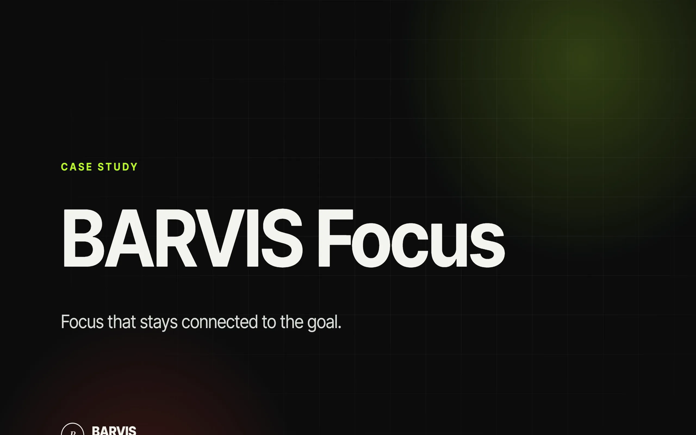

Caso de estudio · Producto propio
BARVIS Focus Concentración que no pierde el objetivo.
- Problema
- El temporizador en una app, las tareas en otra, las notas en una tercera. No se veía a dónde iba el tiempo.
- Solución
- Un temporizador vinculado al proyecto y la tarea, plan del día, estadísticas por día, semana y mes, y niveles que crecen con el tiempo invertido.
- Tecnología
- Django, PostgreSQL, Docker; servidor privado.
BARVIS Focus es mi propio producto, no un proyecto para cliente. Muestra cómo construyo un sistema complejo de principio a fin: sincronización entre dispositivos, uso solo con teclado y analítica.

41 segundos por el sistema: temporizador, tareas, plan del día, estadísticas, progreso y móvil. Datos ficticios.
Concentración que no pierde el objetivo.
En el móvil.
El mismo temporizador sigue donde se quedó en el ordenador.

Estadísticas.
Tiempo por día y proyecto, comparado con el periodo anterior.

Tareas con progreso.
Cada Pomodoro terminado se suma a su tarea.

Progreso.
El tiempo invertido se convierte en niveles de habilidad.

Parte técnica: El mismo temporizador en ordenador y móvil, una ventana pequeña sobre otras apps, una paleta de comandos y uso completo con teclado.
- Temporizador en todos los dispositivos
- Atajos de teclado
- Estadísticas y exportación CSV
- Accesibilidad
- Servidor privado